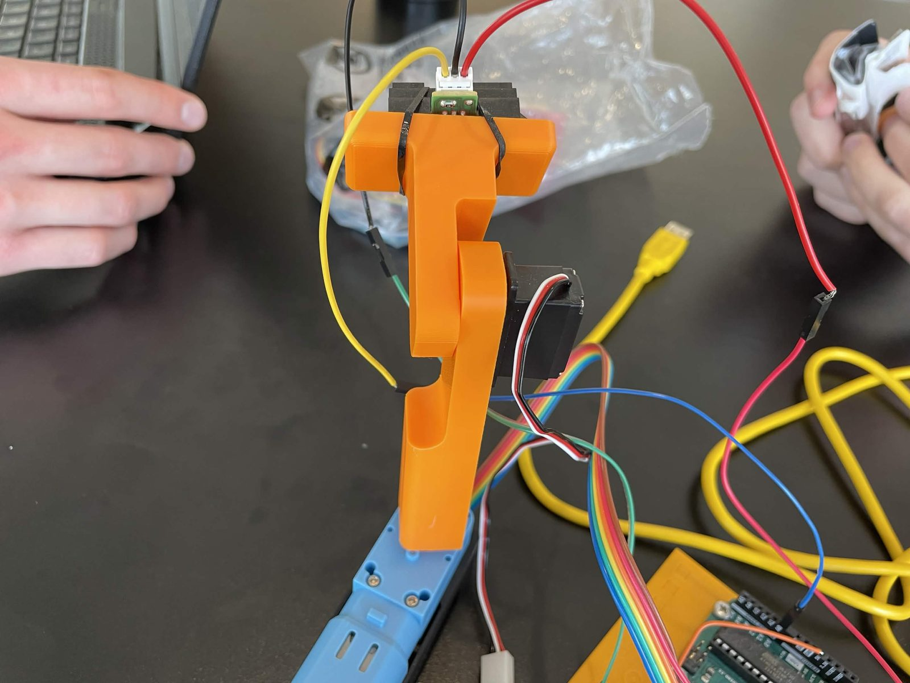

Mechatronics & Behavior-Based Control
Reactive Behavior Robot Arm
Robots that share space with people need fast, reflexive responses as well as deliberate plans, much as an animal flinches before it thinks. The objective was to produce lifelike reactive behavior from simple sensor-to-action rules on a small robot arm. The arm is a 2-DoF build with a rotating base, two links, a 3D-printed structure, and servo-driven joints, with an IR distance sensor mounted at the far end as its eyes (Figure 1). Because the sensor rides on the arm, what the robot sees depends on where it has just moved. On top of this body, I programmed distance-triggered behaviors in Arduino: the base rotates continuously to scan its surroundings, and when an object appears suddenly close, the arm turns away rapidly in a randomized direction. The design keeps the control logic to these two rules and lets the body and sensor placement do the rest of the work.
